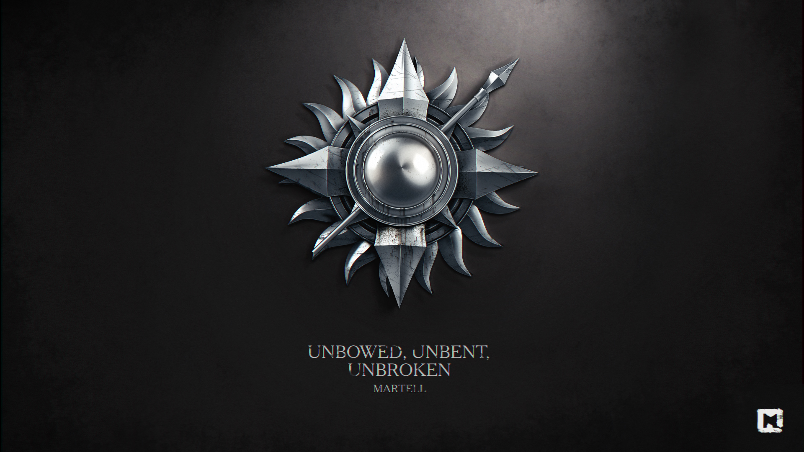

Мартеллы
Мартеллы (ориг. House Martell) — один из великих домов Вестероса. Правят самым южным регионом на континенте — Дорном, их замок — Солнечное Копьё.
Символ Мартеллов — золотое солнце, пронзённое копьём, а их девиз: «Непреклонные, несгибаемые, несдающиеся».
История
До событий сериала
Тысячу лет назад воинственная королева ройнаров Нимерия пересекла Узкое море вместе со своими людьми, спасаясь от драконов Валирии. После высадки на берег она сожгла все корабли, чтобы ни один трус не мог вернуться назад. Нимерия попала в Дорн и вышла замуж за Морса Мартелла, в результате чего образовался очень могущественный дом. В ходе войны они вместе смогли сплотить этот регион, который в то время состоял из множества разрозненных королевств.
В Дорне и раньше у женщин было больше прав и свободы, чем во всем остальном Вестеросе. После свадьбы Морса и Нимерии Мартеллы стали следовать традициям ройнаров, и взяли себе титул принцев. Наследником или наследницей становился старший ребёнок вне зависимости от пола, и дорнийцы следовали за своей принцессой точно так же, как и за принцем.
Во времена вторжения Эйгона дорнийцы решили не вступать в открытый бой с драконами и спрятались. Рейнис, которая отправилась на покорение Дорна, ушла ни с чем. Спустя несколько лет её потомок, Дейрон I решил попробовать вновь. Ему удалось завоевать Дорн и править там в течение нескольких месяцев. Но однажды ночью на его стюарда Лионеля Тирелла напали красные скорпионы, и он погиб от яда. Вскоре после этого Таргариены были побеждены.
Мартеллы продолжили править Дорном независимо от Таргариенов, пока, в конце концов, Дорн не стал частью Семи Королевств. Это произошло после брака Дейрона II и Мирии Мартелл, а сестра Дейрона II Дейнерис вышла замуж за Марона Мартелла.
Много лет спустя состоялся ещё один брак Мартеллов и Таргариенов. Элия Мартелл вышла замуж за Рейгара Таргариена. Вскоре разразилось восстание Роберта, и Элия вместе с детьми была убита Григором Клиганом. А дядя Элии и Дорана, Оберин Мартеллов, Левин Мартелл, погиб в битве на Трезубце.
Известные представители
- Доран Мартелл, принц Дорна, лорд Солнечного Копья. Убит Элларией Сэнд во время переворота в Дорне.
- Тристан Мартелл, его сын и наследник. Убит Обарой Сэнд во время переворота в Дорне.
- Оберин Мартелл, младший брат Дорана. Убит на суде-поединке Григором Клиганом.
- Эллария Сэнд, любовница Оберина, мать нескольких его бастардов.
- Элия Мартелл, сестра Дорана и Оберина, была замужем за принцем Рейгаром Таргариеном. Убита во время разгрома Королевской Гавани Григором Клиганом.
- Левин Мартелл, дядя Дорана, Оберина и Элии. Рыцарь, член Королевской гвардии при Эйрисе II. Убит в битве на Трезубце.
Предки
- Морс Мартелл, правитель Дорна, муж королевы Нимерии, отец четырёх дочерей.
- Нимерия, его жена.
- Мерия Мартелл по прозвищу Жёлтая Жаба. Правительница Дорна времён Завоевания Вестероса Эйгоном Таргариеном.
- Марон Мартелл, во времена его правления Дорн вошёл в состав королевства Таргариенов.
- Дейнерис Мартелл, его жена, урождённая Дейнерис Таргариен.
- Мирия Мартелл, сестра Марона. Жена Дейрона II Таргариена.